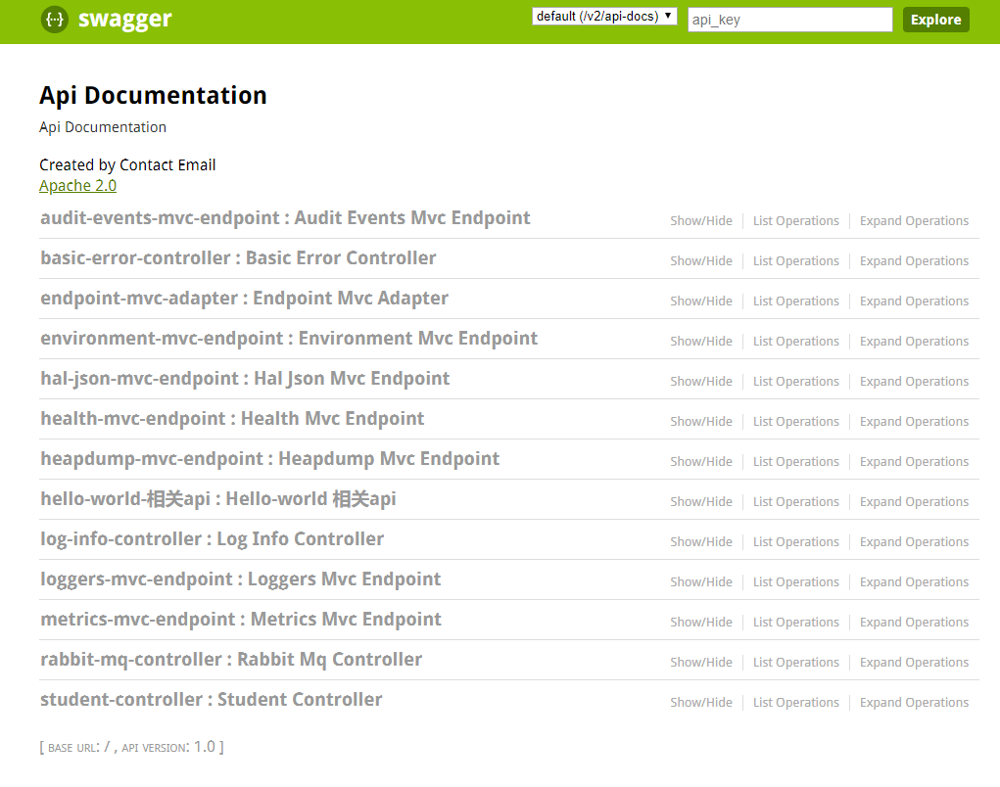
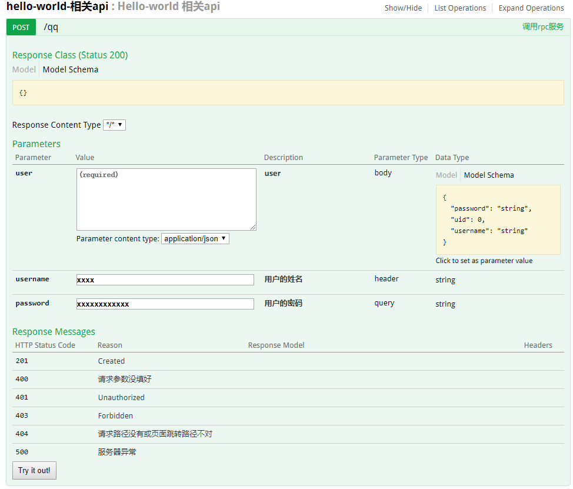

1. SpringBoot整合Swagger2
1.1. 前言
手写Api文档的几个痛点：
- 文档需要更新的时候，需要再次发送一份给前端，也就是文档更新交流不及时。
- 接口返回结果不明确
- 不能直接在线测试接口，通常需要使用工具，比如postman
- 接口文档太多，不好管理
- Swagger也就是为了解决这个问题，当然也不能说Swagger就一定是完美的，当然也有缺点，最明显的就是代码移入性比较强。
1.2. 使用
在pom.xml中添加依赖
<dependency>
<groupId>io.springfox</groupId>
<artifactId>springfox-swagger2</artifactId>
<version>2.6.1</version>
</dependency>
<dependency>
<groupId>io.springfox</groupId>
<artifactId>springfox-swagger-ui</artifactId>
<version>2.6.1</version>
</dependency>
在启动类中添加swagger 开关
@SpringBootApplication
@EnableSwagger2
public class SpringbootSwagger2Application {
public static void main(String[] args) {
SpringApplication.run(SpringbootSwagger2Application.class, args);
}
}
1.2.1. 测试的demo
@RestController
@Api("Hello-world 相关api")
public class HelloWorld {
@Autowired
private HelloRpcService helloRpcService;
@Autowired
private RedisTemplate redisTemplate;
@Autowired
private KafkaTemplate kafkaTemplate;
@ApiOperation("调用rpc服务")
@ApiImplicitParams({
@ApiImplicitParam(paramType="header",name="username",dataType="String",required=true,value="用户的姓名",defaultValue="xxxx"),
@ApiImplicitParam(paramType="query",name="password",dataType="String",required=true,value="用户的密码",defaultValue="xxxxxxxxxxxx")
})
@ApiResponses({
@ApiResponse(code=400,message="请求参数没填好"),
@ApiResponse(code=404,message="请求路径没有或页面跳转路径不对"),
@ApiResponse(code=500,message="服务器异常")
})
@RequestMapping(value = "/qq", method = RequestMethod.POST)
public Object get(@RequestBody User user){
System.out.println("controller get method");
Hello b = helloRpcService.get("qq");
return b;
}
}
得到一下效果


1.2.2. Swagger注解
swagger通过注解表明该接口会生成文档，包括接口名、请求方法、参数、返回信息的等等。
@Api：修饰整个类，描述Controller的作用 @ApiOperation：描述一个类的一个方法，或者说一个接口 @ApiParam：单个参数描述 @ApiModel：用对象来接收参数 @ApiProperty：用对象接收参数时，描述对象的一个字段 @ApiResponse：HTTP响应其中1个描述 @ApiResponses：HTTP响应整体描述 @ApiIgnore：使用该注解忽略这个API @ApiError ：发生错误返回的信息 @ApiImplicitParam：一个请求参数 @ApiImplicitParams：多个请求参数